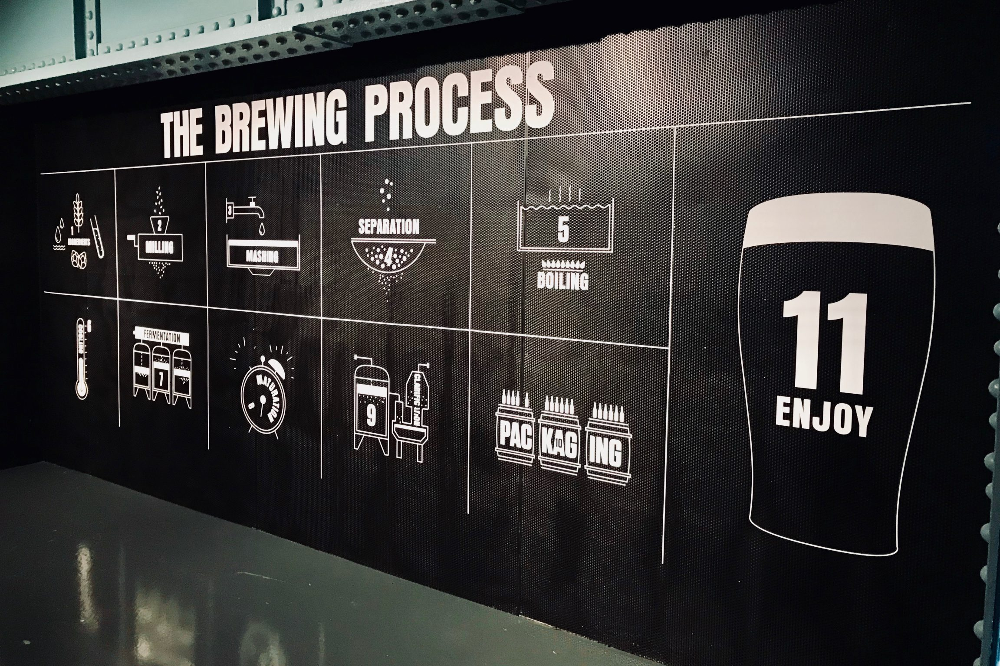
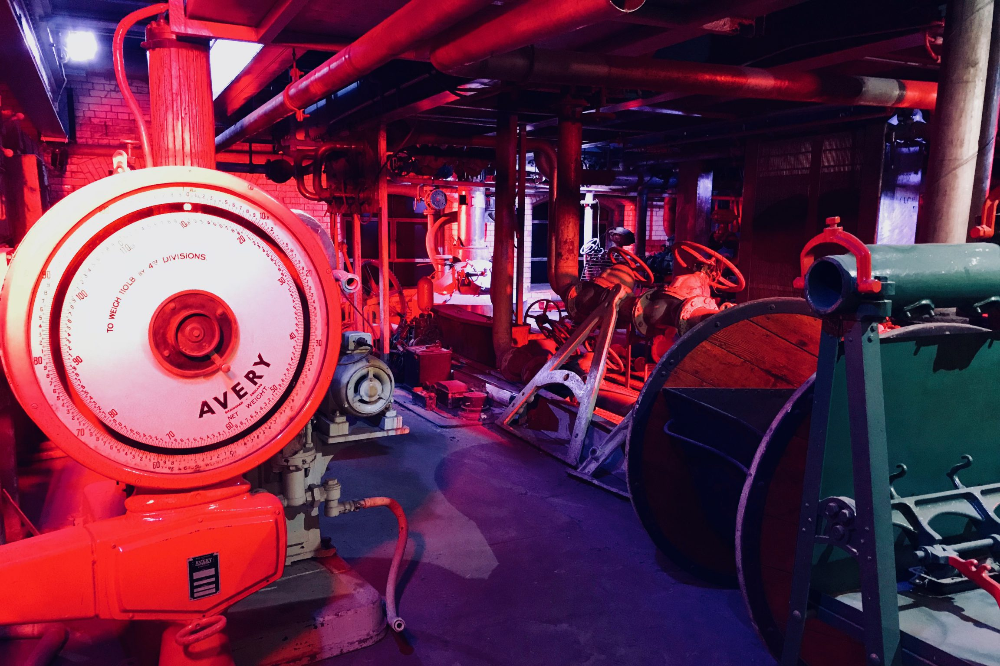
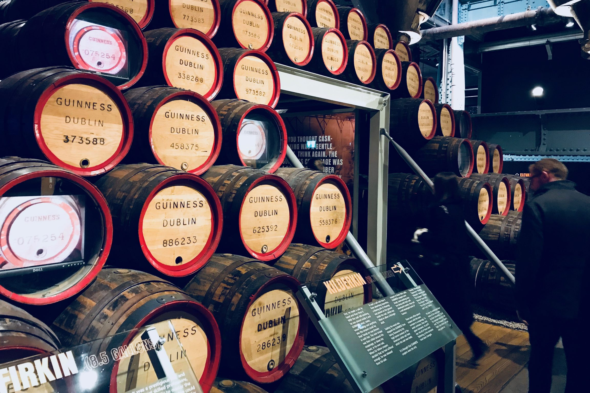
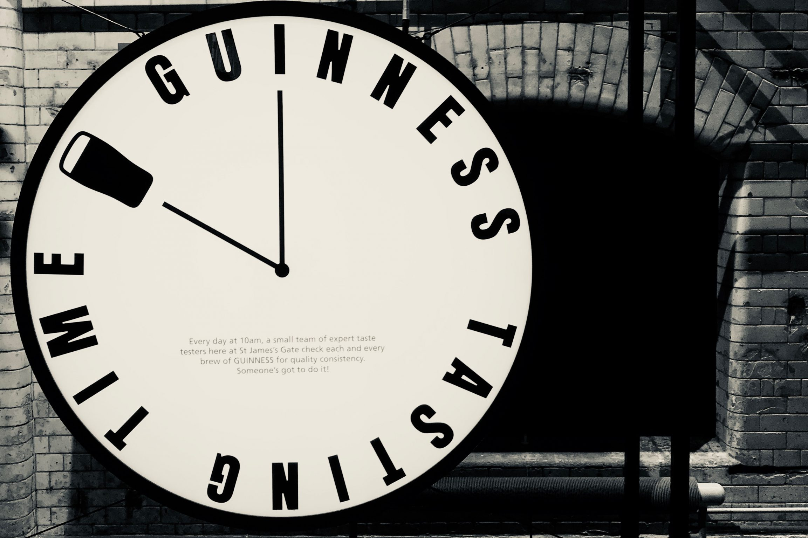
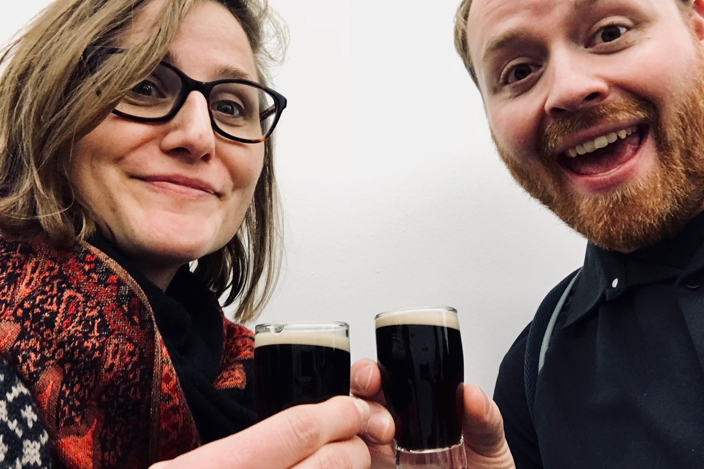
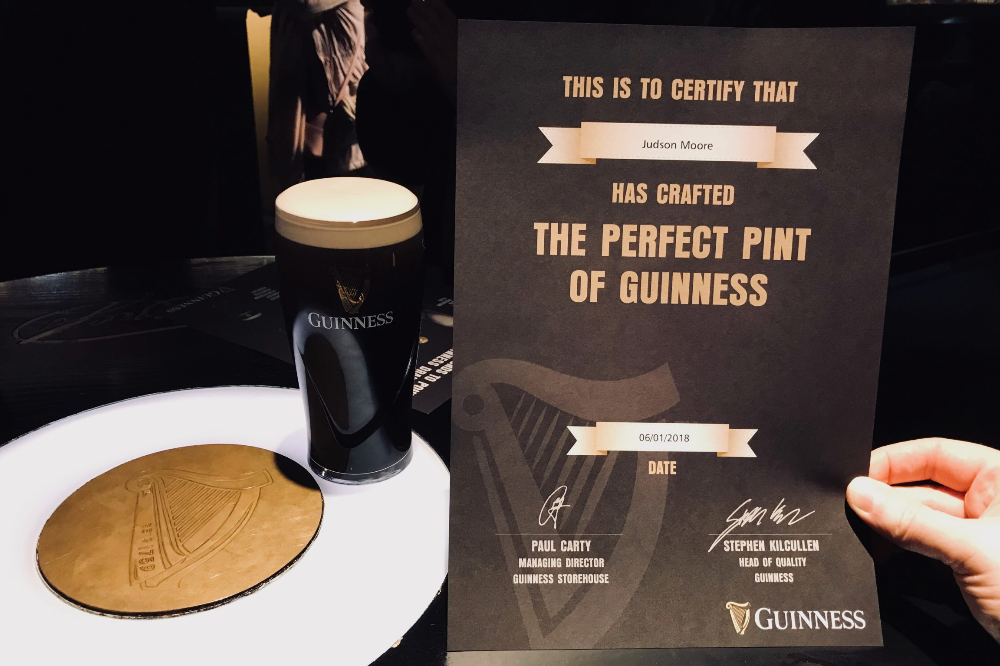

The Guinness Storehouse in Dublin is the traditional home of the world’s most famous stout beer: Guinness. This 200+ year-old city within a city is a major contributor to modern Irish history and to the island’s economy and world fame.
Guinness is known the world over as a premium stout. It’s not the kind of beer you drink every day or in large quantity. It stands out as being quite different from any other beer you will find because it is black, creamy, and served on nitro, which means you also have to have a fairly sophisticated setup just to pour it properly.
So how does a beer with so many complications and which is so limited in drinkability end up being a global powerhouse business? That is exactly what I came to the Guinness Storehouse in Dublin to find out.
Additional reading: Jameson distillery tour and whiskey tasting experience
In A Nutshell
Highlights - The facilities are recently renovated but still have that industrial-era charm. The experience is about much more than just beer but also helps visitors understand the history of beer in general. The experience is extraordinarily well curated.
Lowlights - The Guinness Storehouse is a museum and not a brewery. The start of the tour is a bit chaotic without a clear start point. Most of the experience is self-guided.
Bottom line - The space which the Guinness Storehouse occupies is very impressive and will leave visitors more knowledgeable about Guinness, beer, Dublin, and Ireland. A perfect way to spend 3-4 hours in Dublin.
The Guinness Storehouse is the world’s largest beer glass
The first thing you will notice when you walk into the Guinness Storehouse is that it is very (I mean VERY) large. It is a tall building, 7-stories of museum, which is hollow on the inside, plus a rooftop panoramic bar. Modern renovations have lined the interior atrium with glass panels, effectively forming the world’s largest beer glass. If filled, it would hold something like 17 million pints of Guinness! Unfortunately, this design was impossible to photograph, so you will have to check it out yourself to see what I am talking about.
We booked our tickets online so we had a specific time to arrive. Something to note, however, is that this is more for capacity management and NOT a reservation. The experience starts with a welcome speech which takes place every 15 minutes. You could even skip this and walk straight into the first exhibit if you wanted. So, if you are on your way here and are running late, don’t sweat it! You will be just fine.
After the introduction speech, we were directed to the start of the experience. The first exhibit is all about the ingredients which make Guinness. Of course, these are the standard four ingredients of all beer: barley, hops, yeast, and water. What was so interesting about the way Guinness displays these items were simply by their scale.
The barley was a field of grains probably 30’ x 30’ with multimedia displayed on screens in the center as well as projected onto the ingredients. As you walk around the field, the wall to the outside covers agricultural and historical facts about barley in society. The next little section were stalks of hops growing out of the ground from below where we were walking and stretching out of sight above us into the floors above. When we came to the water, it was a massive waterfall pouring into a vast pool.
All of this was to set up what came next: the brewing process. (Step 11 is an on-going theme throughout the Guinness Storehouse.)

Guinness as an industrial revolution leader
A phrase which came up many times at the Guinness Storehouse was that this space was a city within a city which shaped Ireland’s position in the world during the Industrial Revolution. The whole space has a strong vibe resonating with Industrial Revolution-era aesthetic and machinery. Though much of this has been updated to modern machines and materials, it is super interesting to see some of the original brewing machinery which made it possible for Guinness to be brewed at scale.
I must say that of all the breweries I have visited around the world, none have showcased their industrial roots quite like this.

Detail and impressive scale at every step of the way
The exhibit which I found most interesting was the area pictured below with all of the wooden casks which Guinness is aged in. I don’t often think about beer as being aged in oak, but that actually is fairly common. In Düsseldorf, where I live now, it is common to get alt beer directly from the cask (but that story is for another day).
What most impressed me here was a demonstration of how the barrels are made. The tradesmen which make wooden barrels are called coopers. Coopers are a great example of how to make something exceedingly complicated look super easy when you have the right tools and the right skills.
This exhibit area features a large stack of Guinness barrels, a display of original cooper tools, and a video which shows the whole process, start to finish, of a cooper making one of these barrels. Fascinating.

Cultural impacts of Guinness
There is a whole floor dedicated to Guinness advertising. Apparently, Guinness has some hilarious ads. Many of the ads depict exotic animals like seals and toucans propping up a Guinness on their noses. There actually was a real circus seal that could run around the room while balancing a full glass of Guinness on its nose without spilling it. I imagine that practice has ended, but the videos were quite funny.
Probably my favorite ad said “A woman needs a man like a fish needs a bicycle,” which then, of course, had a fish riding a bicycle, followed by “not everything in black and white makes sense,” and then some call to drink Guinness. Attention-grabbing, to say the least.
Part of the claim in the advertising section of the museum is that these Guinness ads changed the advertising landscape by making a shift away from simply stating facts about a product, and instead focusing on humor, emotion, and merely alluding to the qualities of their product.
The culture piece which I gravitated to was the one which impacts my daily work in the technology sector: the constant availability of beer at work. Every day at 10am, the official taste-testers at Guinness have to take a drink. This is only about quality assurance, of course, but hey, someone has to do it!

A little taste of the black stuff
Speaking of taste testing, it is time for us to get a bit of the black stuff! We get ushered into a room which is nearly identical to The Television Room in Willy Wonka where he makes his television chocolate. This space is a stark difference from what we have experienced so far: plain white walls, no branding, just a white room which bright lighting and a bar with some Guinness taps.
There is a guide which welcomes us to the room and asks us to walk around the room to smell the four “aroma chambers” which are each emitting a gentle fog and smell of Guinness at different stages of brewing.
We are asked to describe what we smell. The room responds with all sorts of “notes of..” and “hints of..” and other pallet terminology which mostly just annoy me when describing beer, but hey, we are at a tasting, so what do you expect?
And then finally, we get to drink some Guinness! Unfortunately, as you can see from this image, it is the world’s smallest beer.

How to achieve a perfect pour of Guinness
But the drinking isn’t over yet! The last stop on the tour is the Guinness Pouring Academy. Here, we learned what makes a Guinness tap different from a normal beer tap. I already knew that Guinness is served on nitro, rather than CO2, but there is more to it than that.
The perfect pour of Guinness demands that you first fill the glass about 2/3 by pulling the tap toward you. Then you let this settle for a minute and when you continue filling the glass you push the tap in which actually pours Guinness without nitro! It is this combination that creates the trademark creamy head on top of the glass.

Plan a visit to the Guinness Storehouse
A visit to the Guinness Storehouse will set you back about $20 and is a great way to fill a rainy afternoon in Dublin. Learn about the Storehouse and all of their ticketing options at guinness-storehouse.com.
Have you been to the Guinness Storehouse before? I would love to know your thoughts about the experience! Please leave a comment below, or feel free to reach me directly on Twitter @judsonlmoore.com.
Judson L Moore
Travel addict. Ambitious about making the world a better place. Writing what I learn along the way.